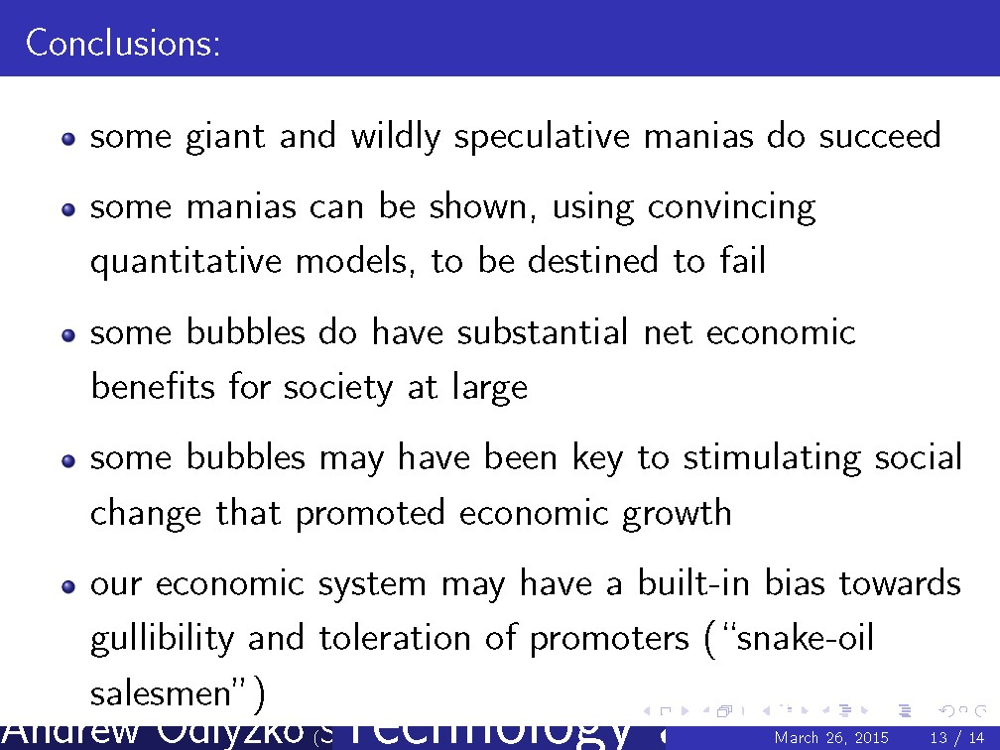
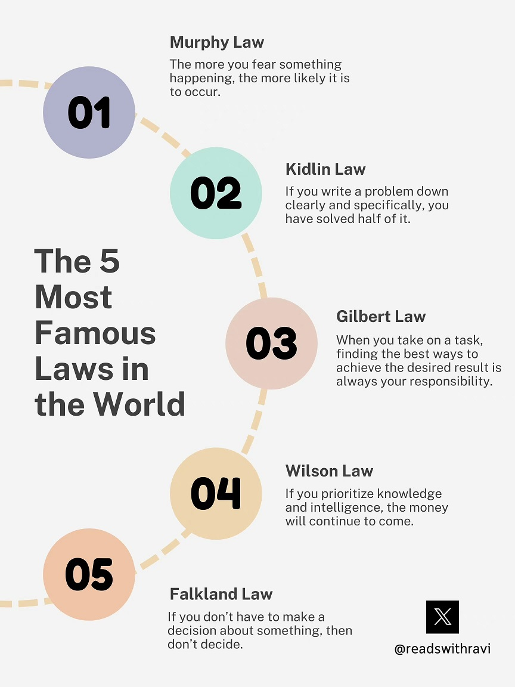
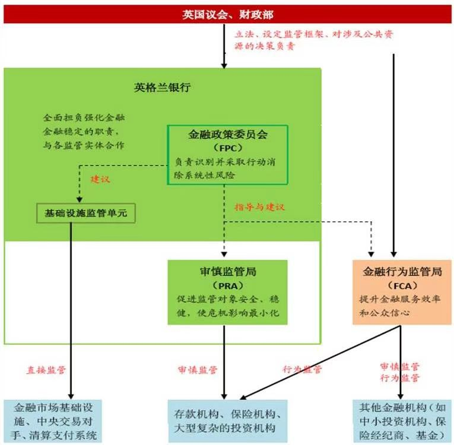
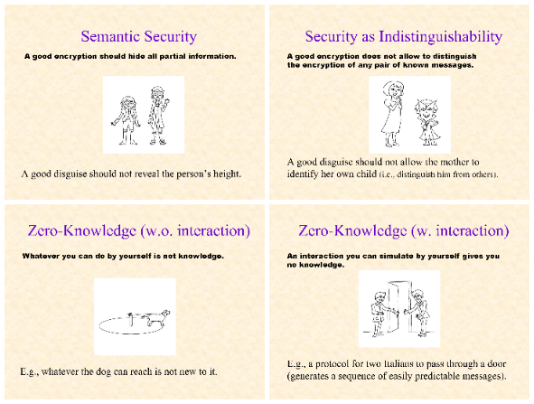
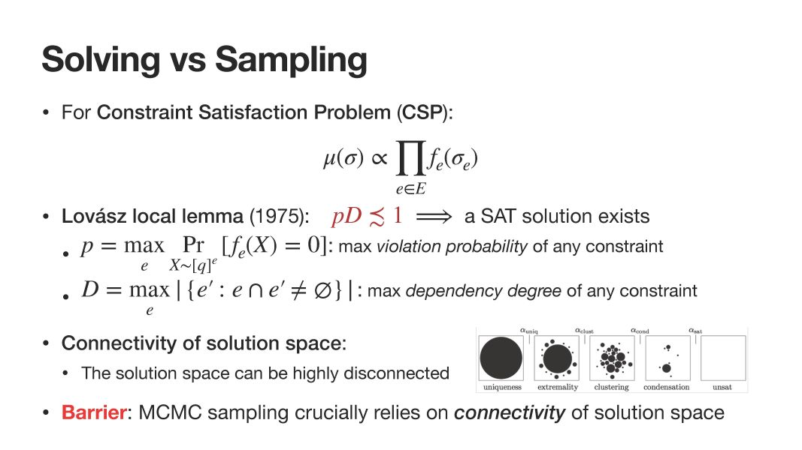

1、黄金N：观水有道，必观其澜。流水为物，不盈不行。
2、原油M：君子之志，不成不达。人之其有，德慧术知。
3、上海A：恒存疢疾，孤尊逆子。其操峭危，其虑患深。
4、深圳L：古之为关，将以御暴。今之为关，将以施暴。
5、二债B：不仁得国，有之者矣。不仁命世，未之有也。
6、十债W：山径之蹊，介然成路。为间不用，茅塞之矣。
7、苹果H：耳目之官，不思而蔽。物物交物，引之而已。
8、微软E：太白若辱，广德若亏。健行若偷，质真若渝。
1、The Industrial Revolution, Early Capital Markets.

2、Components Needed for Computing, Digital Computers.

3、Modern Capital Markets.

4、Lower prices drive wealth.

5、Intelligence moves out to the edge of the network.
6、Horizontal beats vertical.
7、Capital sloshes around seeking its highest return.

8、The military drives commerce and vice versa.
我的研究方向是理论计算机科学。这在计算机领域是一个基础性的方向，旨在使用数学工具来探索计算的本质与界限，并为计算相关的问题提供有严格理论保障和思维创新的解决方法。传统上，理论计算机科学因其所使用的数学语言与理论工具的差别，曾一度被大致分为两大分支：一类是算法和计算复杂性理论，侧重依赖组合、概率、分析等偏具体的数学工具；而另一类是程序语言和形式化方法，更加依赖逻辑、代数、范畴论等偏抽象的数学工具。
理论计算机科学发展至今，这两大分支之间的分界也不再明显。人工智能与机器学习、量子计算、数据库、软件工程、网络与分布式系统、计算机安全等计算机科学的各个方向几乎都发展出了与自身实践相结合的相关理论；同时，物理学、经济学、社会学等专业的一些研究课题也同理论计算机科学之间产生了交叉。
我的具体研究领域是算法与计算复杂性理论。只要在本科阶段上过数据结构和算法相关课程的人，都会接触过一些这方面的内容。近年来，随着大数据时代的来临，计算机科学与技术这门经典学科也面临着许多变化。一方面，计算的典型形式，由传统的单个输入通过至少线性时间复杂度的计算映射到单个输出，演变为在海量数据上利用亚线性时间复杂度开销来回答一类参数化的计算和查询问题。另一方面，计算的目标，也由传统的判定、优化等关注单个解特性的计算问题，演变为采样、计数、度量、推断等关注解空间整体统计性质的统计计算问题。
因此，我重点关注针对数据的计算与查询的复杂性理论，以及统计计算问题的算法与计算复杂性。这两方面的问题，都展现出了一个有趣的“临界”现象：针对数据的计算与查询的时间复杂性会随着数据存储与表示的空间复杂性的改变而产生骤然的变化；同时，统计计算问题的计算复杂性也会随着描述这些问题的参数的连续变化而产生骤然跃迁。这些都是有趣的“计算相变”现象。对于临界计算行为的研究及其理论刻画，一方面，从科学的角度，可以帮助人们解释一个计算问题因何而易、又因何而难——这也是计算理论的宗旨；另一方面，从工程的角度，这也可以帮助人们找到能够达到最优解的那个最“聪明”的算法。
喻良教授从“问题”这一概念的数学化开始，“问题”被定义为一集自然数，并通过一些例子展示了这种定义的合理性。接下来，喻老师讨论了图灵机和可判定性，并列举了一些不可判定问题，如停机问题、一阶数论、希尔伯特第十问题等，然后引入了图灵归约和图灵度的概念，并借此引出讲座的核心问题：“归约到停机问题”是否是证明一个问题不可判定的唯一方法？喻老师详细地介绍了历史上对这个问题的两个看似相反的回答：首先是Sacks等人证明的定理“几乎所有的问题都不比停机问题更困难”，然后是Posner-Robinson定理“每个不可解问题都可以在某种意义上归约到停机问题”。接下来，喻老师介绍了与此相关的著名的马丁猜想，并证明了马丁猜想在集合论公理系统ZFC中不成立。
讲座的第二部分，喻老师详细讲解了随机性。他首先介绍了历史上对于随机性的三种不同的定义，这三种定义被Schnorr证明是等价的，它们分别从不同的视角（不可压缩性、无区别性、不可预知性）来刻画随机性。然后介绍了Chaitin对于随机实数的典范构造，Miller和他对于1-随机性的等价刻画，以及van Lambalgen对于随机对的等价刻画。接下来，喻老师深入讨论了随机性的比较问题，引入了四种随机实数之间的大小关系，并介绍了Miller和他对于这些关系的研究，从而揭示了“越随机计算能力就越弱”这一深刻现象。
我是做数理逻辑的，我在研究中发现，一个随机的东西是包含很多信息的，但可以证明，越随机的东西计算能力越弱。人们可能会认为随机的东西信息越多，所提供的知识就越多，但实际上恰恰相反。这对哲学家们来说可能是个很好的切口，哲学家可以去解释数学家所提出的概念，将哲学和科学结合起来，帮助科学家们理解认识这种现象。